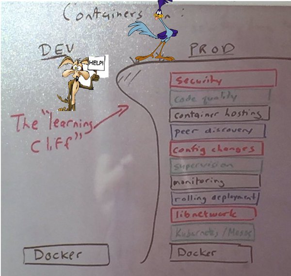

Introduction to Docker

Let's start with a little Q & A.
Answer: Docker. Now - what's the question?
"Docker is an open platform for developers and sysadmins to build, ship, and run distributed applications." Docker is open source.
Official What is Docker
Or even better - Understanding Docker
Docker Basics
Getting started with Docker requires a few things:
- Install Docker on your local machine with Docker for <YOUR PLATFORM>. Or if you've previously installed Docker you might have the Docker Toolbox.
- Pick a container with your favorite technology from the Hub to run.
docker run --name automation-tools-web -d -p 8080:8080 nginxto start things up.
Did you think there'd be more?
Docker Hub/Repositories
Docker's ability to find public containers is based on using the Docker Hub. But you can run private registries as well, so you can keep your Docker images inside your firewall/data center. Check out Artifactory to be your Docker Registry (and npm cache and Ruby Gem repo and Maven repo). Artifactory is very helpful.
Application developers will maintain their own Docker images, so you just need to overlay your application code. This can rapidly speed your development and deployment cycles. When an application is updated, the provider will update their Docker image and you'll get the new version of the app.
That said don't go trusting images from out in the wild.
- Test
- Verify
- Test each release
- Dig in to their Dockerfile
- Know the commit history
- Or...
FROM- which image your build container will begin form.MAINTAINER- you. Own your work!RUN- Run this command on the build container. A Dockerfile may have mulitpleRUNlines. Poor man's Config Management (unless you RUN chef-client ;).WORKDIR- akin to usingcd. Subsequent commands are exec'd in the WORKDIRADD- adds files and directories from our build context into our image. Can unpack archived files.COPY- likeADDbut without extraction or decompression capabilities. Both COPY and ADD will also make parent directories if they don't already exist.EXPOSE- any ports you need opened up into the container. Thedockercommand will later manage port mapping with the-poption at runtime.CMD- command that will run when the container starts. Can be overridden from the command line.ENTRYPOINT- likeCMDbut *cannot* be overridden, although options can be passed to the ENTRYPOINT.VOLUME- create a volume on the container. Often with data from the host. Can be shared with multiple containers.USER- specifies a user the image should be run as.ONBUILD- executes a trigger (e.g.ADDorCOPY) when the image is used as the basis for another image.ENV- set environment variables during image build process.- Docker.com
- Docker GitHub Check the open issues. Fix the open issues.
- Docker User Guide
- The Docker Book. $9.99 as an eBook. Worth it.
- The VM for our class has Docker installed.
- Make sure you have run a
vagrant destroyon any VMs from the Vagrant section. - From the root level of the ATB git repository there is a
Vagrantfilewhich will spin up the VM we will use the rest of the day. - If you are using a local copy of the
atb-lisa-2017-1.0.0_vbox.boxVM change the comments in line 21-23 of that Vagrantfile to reference you local copy of class VM instead of downloading it over the Internet. - Now -
vagrant upand we're ready to begin. - In the VM
cd /vagrant/dockerwhich will put you in to the Automation Tools git repo'sdockerdirectory with the Dockerfile to be completed by you. - Make yourself the
MAINTAINERof the Dockerfile. - You'll want to
EXPOSEport 8085 to view the sample app. - Create a directory using
RUNto hold our applicationmkdir -p /usr/src. - Change the
WORKDIRto/usr/src/which will make it the directory where we will check out our example app. - Use
RUNtogit cloneour example app from Github fromhttps://github.com/automation-tools-bootcamp/example-nodejs-app.gitin to the container. WORKDIRagain to the directory (/usr/src/example-nodejs-app) where you checked out the repo.RUN npm installwhich is the node.js command to install all the app's dependencies.- Final thing for the Dockerfile: Use
CMDto start the app withCMD [ "npm", "start" ]. - Make a
docker buildof your new image. Be sure to tag it-t atbwhen you do.docker build -t atb ./ - Now it's time to
docker runthat new image as a container.docker run -it --rm -p=8085:8085 atb. - View the app in your browser.
- Since the container is not daemonized (which you'd do with the
-dswitch, instead of-itswitches), use Ctrl-C to killnpm startand exit the container. - If you do not already have a Docker Hub account, create a Docker Hub account so you can push your finished container to the Docker Hub.
- Tag our
atbcontainer with your Docker Hub userID.docker tag atb <YourDockerHubID>/atb - Make sure you are logged in Docker Hub by running
docker login. - Use
docker push <YourDockerHubID>/atbto upload your image to the Docker Hub.
Building your own Docker image
A Dockerfile will generate your own Docker image for you with your applications and even your code installed.
Docker image history is similar to a project's Git history. Docker images start from a read-only base image and then have (usually) small diffs as they are versioned. You can view the changes with the docker history <image> command.

The pieces of a Dockerfile:
Other pieces of a Dockerfile, which aren't applicable to our work today:
The other pieces of Container infrastructure
So Docker is fast and makes it easy to deploy a container. Are their any downsides? Well, not necessarily downsides, but there are lots of moving parts to a production Docker environment.

Alas, there are numerous topics on that list which could individually be covered here in their own topics. Just know that there are people successfully using Docker/containers in production. You can do it too.
Learn more Docker
This is the tip of the iceberg for Docker. Go forth and learn more!
Workout
We are going to complete the following actions:
Bonus Workout
If you're really feeling empowered, you have the option to complete the following actions to push your container to the Docker Hub: